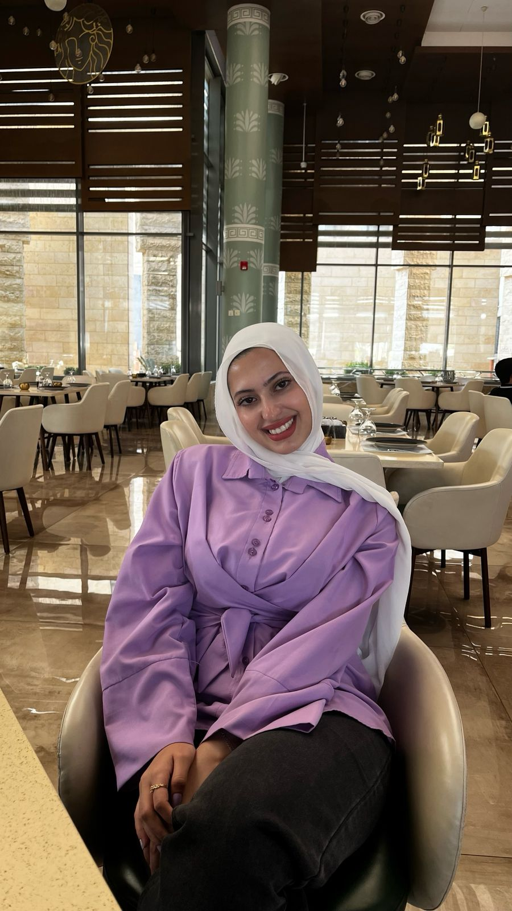

Major: Computer Information Systems
Academic Level: Fourth Year
Student ID: 162037
Email: sakelani22@cit.just.edu.jo
| Technology | Learn More |
|---|---|
| 🐍 Python | Visit |
| 📱 Flutter | Visit |
| 🎯 Dart | Visit |
| 💻 Front-End Development | Visit |
| 🖥️ Back-End Development | Visit |
| 🗄️ SQL | Visit |
In four years, I see myself working in the software development field. I am especially interested in mobile application development using Flutter. I also want to work in Quality Assurance (QA) to ensure that applications are reliable and user-friendly. My goal is to build useful applications that solve real problems. I hope to gain professional experience and continue improving my programming and software testing skills.